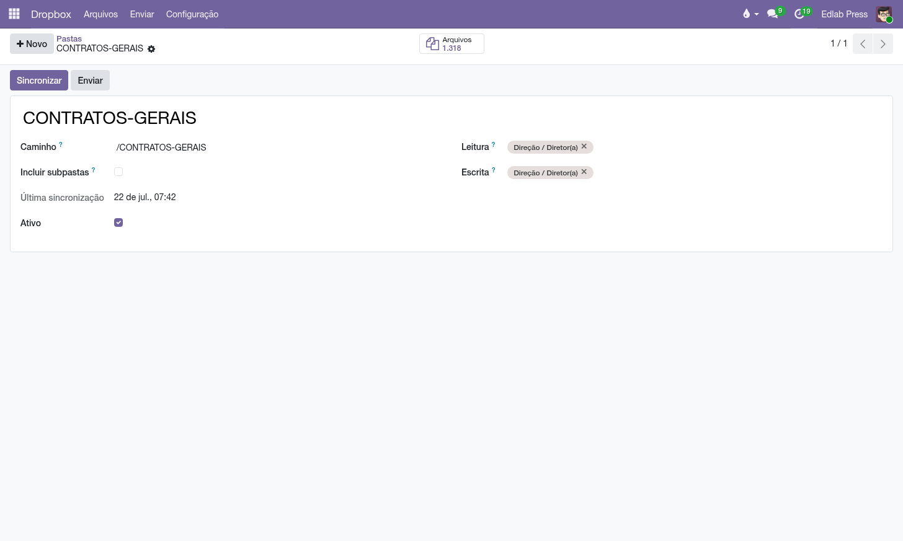
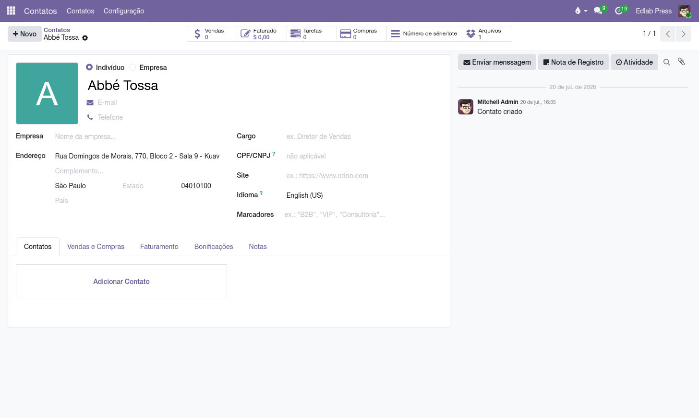

Os PDFs da editora — contratos, capas, miolos — continuam morando no Dropbox. O que muda é o porteiro: o Odoo decide quem lê e quem grava cada pasta, compartilha com prazo de validade, e liga cada arquivo aos autores, aos títulos e a tags livres.
O Dropbox tem uma credencial só — a conta da editora — e por isso não sabe dizer "o marketing lê, o editorial grava". Este módulo resolve exatamente isso:
Grupos de acesso: o módulo cria Dropbox Files / Usuário (vê o app; o que ele alcança é decidido pasta a pasta) e Dropbox Files / Gerente (enxerga todas as pastas e arquivos, cura as tags e as credenciais). Mapear pastas novas — e mudar caminhos e permissões — é ato de administrador do sistema, não do gerente. E escrever no Dropbox (enviar, compartilhar) exige estar num grupo de escrita da pasta, seja quem for: configurar a estante é um poder, enchê-la é outro.
Multiempresa por construção: cada empresa da base tem a sua conta do Dropbox, as suas pastas e as suas tags — quem é de uma empresa não vê as estantes da outra, antes mesmo de qualquer grupo entrar na conversa. O Dropbox é um dos corpos do chassi Cloud Files, o mesmo que serve o Google Drive e o GitHub: o portão, os vínculos e a disciplina são idênticos nos três apps.
Conta do Dropbox (uma vez por empresa, pelo gerente):
Prazo dos links: na mesma Conta, Links compartilhados expiram após (dias) — padrão 30. Compartilhar de novo renova o prazo; 0 cria links sem validade.
O Dropbox só honra expiração de link em plano pago (Plus, Professional ou Business). Em conta gratuita a criação do link com prazo é recusada — o erro sai explicado, e a saída é zerar o prazo ou fazer upgrade.


Cada arquivo aceita vários contatos (um contrato com três autores aponta para os três), um produto (o título a que pertence) e tags livres ("contrato", "capa", "PNLD") cujo vocabulário o gerente cura em .
Do outro lado da ponte, a ficha do contato e a do produto ganham um botão com a contagem de arquivos, que abre a lista já filtrada. A contagem respeita as permissões: ela só promete o que a pasta deixa abrir — quem não tem o módulo nem vê o botão.

Arquivar, no Odoo, tira o registro das listas sem apagá-lo. Neste módulo ele acontece de dois jeitos: manualmente, ou sozinho quando a sincronização nota que um arquivo sumiu da pasta (alguém apagou ou moveu direto no Dropbox) — o registro é arquivado em vez de excluído, para o histórico de compartilhamentos não se perder.
Nada acontece no Dropbox. O módulo não tem sequer código de apagar ou mover arquivos lá; as únicas escritas são o envio e o link de compartilhamento. Arquivar mexe só no espelho: a estante fica intacta, a ficha sai da gaveta.
Quem tem o link compartilhado precisa de Odoo?
Não — e é por isso que criar o link é restrito, confirmado, assinado e com prazo. O link é a única
porta que não passa pelo porteiro.
Apaguei um arquivo no Dropbox. O que o Odoo faz?
No próximo sync o registro é arquivado (não excluído). O arquivo em si o módulo nunca apaga.
Por que uma pasta não aparece para um usuário?
Ou ele não tem o grupo Dropbox Files / Usuário, ou nenhum grupo dele está na
Leitura/Escrita da pasta. Pasta sem grupos é
só dos gerentes.
Sou gerente (ou administrador) e o Compartilhar foi recusado.
Escrever no Dropbox exige estar num grupo de Escrita da pasta —
o cargo não substitui a permissão. Peça ao administrador para incluir o seu grupo na pasta.
O upload dá erro de nome.
O envio nunca sobrescreve: se o nome já existe, o Dropbox renomeia para
arquivo (1).ext — confira no próximo sync.
Todo documento do sistema carrega um prefixo na numeração — CO/2026/00001 é um acerto, AT/2026/00042 é um chamado. A lista é a mesma em todos os manuais:
| Prefixo | O que é |
|---|---|
C | Pedido de consignação: o pedido que põe livros na prateleira do cliente — C00001, no lugar do S da venda comum. |
CO/ | Consignação, o documento do acerto: registra o que o cliente vendeu e vira venda — CO/2026/00001. |
CR/ | Retorno de consignação: o documento que pede a devolução dos exemplares da prateleira — CR/2026/00001. |
CA | Auditoria de consignação: reconstrói o saldo da prateleira do cliente pelas notas fiscais e registra o ajuste — CA00001. |
CP/ | Campanha de consignação: o sortimento-alvo por canal — quantos exemplares de cada título as prateleiras devem ter — CP/2026/0001. |
AC/ | Acordo de Consignação: o contrato com a livraria, dono da prateleira — AC/2026/00001. |
COM/ | A série das transferências de remessa e entrega de consignação do armazém — COM/2026/00001. |
RET/ | A série das transferências de retorno de consignação, da prateleira ao armazém — RET/2026/00001. |
REM/ | Remessa: a nota de simples remessa, sem cobrança — a numeração vem do diário fiscal REM. |
COL/ | Coleta: o lote do pedido de coleta às transportadoras — COL/2026/00001. |
AT/ | Atendimento: o chamado nascido do e-mail comercial — AT/2026/00001. |
MBX/ | O lote de envio de metadados à Metabooks — MBX/2026/00001. |
Impostos de Direitos Autorais/ | O lote da fatura acumuladora do IRRF retido dos autores no mês. |
Royalties entre Empresas/ | O lote da fatura acumuladora de royalties entre as empresas da casa. |
| Do próprio Odoo | |
S | Pedido de venda comum — S00001; o pedido de consignação usa o C no lugar. |
WH/OUT | Entrega comum do armazém: a transferência de saída padrão do Odoo. |
WH/IN | Recebimento do armazém: a transferência de entrada padrão do Odoo. |
Manual completo, com busca e as demais páginas: Arquivos no Dropbox.